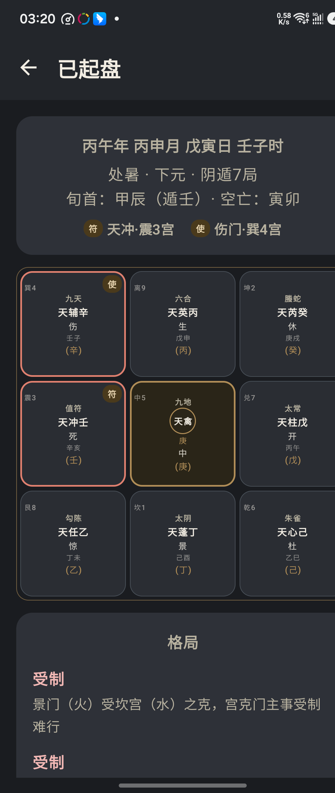

能 力
一盘在手，参断有据
🌀
飞盘排盘
定局、布盘、星门顺飞、暗干支，完整七步，值使飞宫法 · 符头定元。
🔍
格局检测
击刑、入墓、门迫、伏吟反吟、守门、空亡与正格干支组合，自动标注吉凶。
🔮
奇门演卦
星门演卦、门宫演卦，盘面星门叠成六爻卦象，多一层参断视角。
✨
玄鉴参断
接入大模型，起盘后一键参断吉凶，含思考过程与自备资料 skill。
🗂️
案例库
事项分类、反馈筛选、导入导出，断过的盘都有迹可循。
📖
内置教材
《奇门基础资料 2023版教》三卷内置，星门神释义随点随查。
玄鉴 · 玄鉴参断
以飞盘奇门断法为纲，佐以自备资料，为盘面参断吉凶。内置「占断思维纪律」「飞盘奇门规格」，亦可导入本地 skill。意见仅供参考，最终判断在人。
资 料 记 忆
玄鉴 · 资料 skill
玄鉴可携带「资料 skill」——断法资料与思维纪律。内置两条，亦可自行导入本地 skill，随时开关、增删。开启的 skill 会随盘面一并呈与玄鉴参断。
占断思维纪律 固定 ▸
# 占断思维纪律（提高 AI 判断准确率） > 本纪律约束模型在断局 / 占断 / 解读奇门盘时的推理方式，目的是抑制 AI 最常见的三类错误——把解读当事实、凭空编造、过度自信。 ## 铁律（不可违反，违者判断作废） ### 1. 确定性算法 与 概率性解读 严格分层 - 排盘是确定性算法：同一时间点只有唯一正确盘面。错一宫即整盘作废，必须重算，不得「差不多」。 - 断局是概率性解读：同一盘面可有多种合理解读，没有「标准答案」。 - 任何时候不得把「我的解读」说成「盘面的必然」；不得把「排盘算错」用「解读偏差」搪塞过去。 ### 2. 事实 与 解读 强制分离 - 先客观罗列盘面事实（某宫是什么星/门/神/干/格局），再给解读（这意味着什么）。 - 每条解读前标注它是「事实」还是「推断」。禁止把推断写成事实的肯定语气。 ### 3. 强制可回溯（每句断语都要能定位） - 每条断语必须能回溯到具体的宫位 / 星 / 门 / 神 / 格局。 - 无法定位依据的断语 = 不许说。禁止「整体感觉」「直觉上」「综合来看」这类无锚点的空话。 ### 4. 禁止绝对化措辞 - 禁用「一定」「必然」「百分百」「绝对」「注定」「铁定」。 - 改用「倾向于」「主…之象」「宜…不宜…」「大概率」「有…的风险/可能」。 ### 5. 禁止编造（教材没有的规则不发明） - 只依据教材口径（《奇门基础资料 2023版教》）与已列格局。教材未载的规则、格局、象意，不得自行发明。 - 不确定 → 明说「教材未载 / 我不确定」，而不是编一个听起来合理的答案。 - 引用教材时标注出处（卷/章/节），不标注即视为自编。 ### 6. 多宫印证决定置信度 - 单一象不轻下结论；多个宫位 / 格局 / 六亲同向印证时，置信度才升高。 - 存在矛盾象时，如实报告冲突，不强行圆场、不选择性忽略。 ### 7. 声明局限 - 断局结论是「参考性意见」，最终判断在人。每次断局结尾必须声明此局限。 ## 置信度分级标准 | 等级 | 触发条件 | 措辞 | |---|---|---| | 高 | 用神宫 + 至少两处独立格局/星门神同向印证，且无矛盾象 | 倾向于 / 主…之象 | | 中 | 仅一处明确格局印证，或有轻微矛盾 | 可能 / 有…之象，需再核 | | 低 | 无明确格局，仅靠单一星/门/神象意引申 | 仅作参考 / 证据不足 | ## 输出模板（断局必须按此结构） 【盘面事实】逐宫客观罗列（只写「是什么」，不写「意味着什么」） 【用神定位】所问之事 → 取何宫/星/门/神为用神，理由一句 【格局论断】触发的每个格局：名称 + 依据宫位 + 是吉是凶；无格局则明说「无明确格局」 【综合判断】各象是否同向？置信度：高/中/低；存在矛盾则如实列出 【结论与建议】宜 / 不宜（措辞见铁律 4），结尾固定声明「以上为参考性解读，最终判断在你。」 ## 常见错误示例（自查清单） | 错误 | 反例 | 正确 | |---|---|---| | 解读伪装事实 | 「此局必破财」 | 「生门落空（事实），求财难成（解读），置信度中」 | | 无锚点空话 | 「整体运势不错」 | 「值符落巽4、临天辅、生门在艮8，事业/文书方面得贵人助」 | | 绝对化 | 「一定成功」 | 「宜进，成功概率较高」 | | 编造格局 | 「此乃『金龙献爪』格」 | 教材无此格 → 不说，或明说「教材未载」 | | 忽略矛盾 | 只挑吉象讲 | 「生门得地（吉），但值使落空（凶），须待出空，暂缓」 | ## 补充：应期判断纪律 - 推断应期（何时成/败）时，须注明依据，并对应到大致时间（如「值使落空，待出空之期」，落到具体年月）。 - 应期是更弱的推断，置信度默认再降一级；只给大致时间窗，不给精确日期。 - 无明确依据的应期，宁可说「应期不明」，不硬凑一个日子。
飞盘奇门规格 内置 ▸
# 飞盘奇门遁甲 · 模型调用规格书（v1.0） > 本文件是自包含、零外部依赖的飞盘奇门排盘 + 占断规格书。 > 用途：整份内容可直接作为任意大语言模型的 system prompt、上下文或 RAG 知识库切片。模型拿到本文件 + 一个时间点，即可独立完成排盘与断局。 > 权威口径：《奇门基础资料 2023版教》（55 页 WPS doc）。本文档为其结构化提炼，凡规则冲突，以该教材原文为准。 ## 0. 总则 - 体系：时家飞盘奇门，鸣法体系，值使飞宫法，星门顺飞。 - 飞盘特征：九星含天禽、八门多一中门，共九星九门；九神实为十一神（白虎下藏勾陈、朱雀下藏玄武）。星门皆顺飞（不随阴阳遁改顺逆）。 - 任务分两层：① 排盘 = 确定性算法（有唯一正确结果，可校验）；② 断局 = 概率性解读（无唯一答案，须标注依据与置信度）。二者不可混淆。 - 输入最小集：公历日期 + 时辰（或直接给定四柱干支）。输出完整盘面 + 可选断语。 ## 1. 排盘七步（确定性算法） ### 步骤 1 · 排四柱 - 年柱：以立春交节时刻分界（非正月初一）。 - 月柱：以节令分界（非初一）；建寅月，正月寅月 → 十二月丑月，地支固定。天干用五虎遁：甲己之年丙作首，乙庚之岁戊为头，丙辛之岁寻庚起，丁壬壬寅顺行流，戊癸何方发，甲寅之上好追求。 - 日柱：查万年历（六十甲子循环）。 - 时柱：子时 23:00 起为一日分界（23 点前属上一日亥时）。天干用五鼠遁：甲己还加甲，乙庚丙作初，丙辛从戊起，丁壬庚子居，戊癸何所发，壬子是真途。 - 十二时辰：子 23-01、丑 01-03、寅 03-05、卯 05-07、辰 07-09、巳 09-11、午 11-13、未 13-15、申 15-17、酉 17-19、戌 19-21、亥 21-23。 ### 步骤 2 · 定阴阳局数（节气 + 符头定元） - 阴阳遁：冬至 → 夏至前用阳遁；夏至 → 冬至前用阴遁。 - 定元（符头法）：每 5 天一元，以符头（甲日 / 己日）的地支定元：子午卯酉 → 上元；寅申巳亥 → 中元；辰戌丑未 → 下元。 - 局数表（每节气三元，记为 [上元, 中元, 下元]）： - 阳遁：冬至 [1,7,4]、小寒 [2,8,5]、大寒 [3,9,6]、立春 [8,5,2]、雨水 [9,6,3]、惊蛰 [1,7,4]、春分 [3,9,6]、清明 [4,1,7]、谷雨 [5,2,8]、立夏 [4,1,7]、小满 [5,2,8]、芒种 [6,3,9]。 - 阴遁：夏至 [9,3,6]、小暑 [8,2,5]、大暑 [7,1,4]、立秋 [2,5,8]、处暑 [1,4,7]、白露 [9,3,6]、秋分 [7,1,4]、寒露 [6,9,3]、霜降 [5,8,2]、立冬 [6,9,3]、小雪 [5,8,2]、大雪 [4,7,1]。 - 置闰 vs 拆补：本教材推荐拆补法（以节气为体、干支为用，当日落入哪一元即用该节气该元之局）。置闰法仅在芒种 / 大雪之后、夏至 / 冬至之前、符头超节气九天时使用。 - 旬首与空亡：六十甲子分六旬；空亡 = 旬首之后第 10、11 位地支（如甲子旬 → 戌亥空；甲午旬 → 辰巳空）。 ### 步骤 3 · 布地盘奇仪 - 奇仪顺序：戊 己 庚 辛 壬 癸 丁 丙 乙（戊起局数宫）。 - 阳遁顺飞、阴遁逆飞，宫序为洛书九宫 1坎 2坤 3震 4巽 5中 6乾 7兑 8艮 9离。 - 例：阴遁八局 → 戊8 己7 庚6 辛5 壬4 癸3 丁2 丙1 乙9。 ### 步骤 4 · 布天盘奇仪 - 值符干 = 旬首遁仪（甲子→戊、甲戌→己、甲申→庚、甲午→辛、甲辰→壬、甲寅→癸）。 - 把值符干加在地盘时干所在宫，其余天盘干按奇仪序整体平移（等价于地盘干整体平移使值符干落时干宫）。 ### 步骤 5 · 布九神（十一神） - 神序：值符、螣蛇、太阴、六合、勾陈（白虎）、太常、朱雀（玄武）、九地、九天（共十一神，白虎下藏勾陈、朱雀下藏玄武）。 - 阳遁顺飞、阴遁逆飞；值符神随值符宫起。 - 按所测之事选用白虎/勾陈、玄武/朱雀（如测病/官司用白虎、测盗用玄武），不区分阴阳遁选用。 ### 步骤 6 · 布九星八门（飞盘核心） - 九星序：天蓬、天芮、天冲、天辅、天禽、天心、天柱、天任、天英。 - 八门序（飞盘含中门）：休、死、伤、杜、中、开、惊、生、景。 - 星门本位宫：蓬1 芮2 冲3 辅4 禽5 心6 柱7 任8 英9；休1 死2 伤3 杜4 中5 开6 惊7 生8 景9。 - 星门皆顺飞（无论阳遁阴遁，均按洛书序 +1 飞布）；天禽 / 中门参与飞布、不固定居中。 - 值符星 = 旬首遁仪地盘宫的本位星；加地盘时干宫后，按星序（含天禽）整体顺飞 9 宫。 - 值使门（飞宫法）= 旬首宫本位门；落宫 = 从旬首遁仪地盘宫起，按六十甲子序数，阳遁顺飞 / 阴遁逆飞，数到当前时柱；落定后按门序（含中门）整体顺飞 9 宫（值使为中门时同样飞宫，不固定居中）。 ### 步骤 7 · 布暗干支（飞宫法 · 旬内回绕） - 把时干支加到值使门落宫；暗干序列 = 本旬十个干支从时干支起正序循环，遇甲不排（回绕过旬首）。 - 宫位阳遁顺飞、阴遁逆飞；中宫也参与飞布（不跳过）。 - 不是完整六十甲子顺/逆排，是旬内回绕（空亡地支天然不在旬内，自动满足）。暗干支纳音仅作参考，不作主要吉凶依据。 ## 2. 排盘自检（校验案例，模型排完后自行比对） - 2026-08-17 22:00（丙午 丙申 癸亥 癸亥，立秋下元阴遁八局）：值符天冲落震3、值使伤门落震3；星序冲3辅4禽5心6柱7任8英9蓬1芮2；门序伤3杜4中5开6惊7生8景9休1死2；九神阴遁逆飞。 - 2024-12-03 09:19（甲辰 乙亥 辛丑 癸巳，阴遁八局）：地盘戊8己7庚6辛5壬4癸3丁2丙1乙9；值符庚加时干癸落震3；值使开门落乾6（甲申旬，逆飞数到癸巳回乾6）。 - 2026-08-30 戊戌时（阴七局）：值符天辅落兑7 → 辅7禽8心9柱1任2英3蓬4芮5冲6（天禽落艮8、天芮居中5）；值使杜门落离9 → 杜9中1开2惊3生4景5休6死7伤8（中门落坎1、景门居中5）。 - 暗干例：2024-12-03 癸巳时（甲申旬阴八局，值使开门落乾6）：乾6癸巳、中5乙酉、巽4丙戌、震3丁亥、坤2戊子、坎1己丑、离9庚寅、艮8辛卯、兑7壬辰。 ## 3. 星门神象意（断局速查，详见教材） ### 九星（象法以星为主、门为辅） - 天蓬 坎1 水 凶：盗贼、色情、暗昧、投机、大智大勇 - 天芮 坤2 土 凶：疾病、学生、学习、破旧、众多 - 天冲 震3 木 次吉：行动、冲动、快速、雷厉风行 - 天辅 巽4 木 大吉：文化、教育、传播、中介、签证 - 天禽 中5 土 大吉：领导、运筹、隐忍、忠厚、谋划 - 天心 乾6 金 大吉：医药、领导、聪明、圆融、缜密 - 天柱 兑7 金 凶：口舌、争吵、破坏、惊恐、能言 - 天任 艮8 土 吉：建筑、劳作、保守、吃苦耐劳 - 天英 离9 火 中平：光明、文书、证件、血光、激情 ### 八门（生克判断以门为主、星为辅） - 三吉门：开（乾金，事业/开始/公开）、休（坎水，婚姻/休闲/水路）、生（艮土，钱财/利润/房产）。 - 伤（震木，军警/受伤）、杜（巽木，隐藏/闭塞/宗教）、景（离火，文书/证件/字画）、死（坤土，死亡/坟地）、惊（兑金，口舌/官非）。 - 中门（飞盘独有）：阴阳未分、昏迷、瓶颈、进退两难、房屋中央。 - 门宫关系：门克宫 =「迫」（大凶，判生死尤重）；宫克门 =「制」；门生宫 =「和」；宫生门 =「义」。 ### 九神（十一神） - 值符（土，领导/贵人/贵重）、螣蛇（火，虚诈/惊恐/缠绕/玄学）、太阴（阴金，荫护/暗助/阴险）、六合（乙木，合作/婚姻/中介/多数）、白虎（庚金，凶杀/道路/刑伤/疾病）、太常（享乐/衣食/祭祀）、朱雀（火，口舌/信息/文书）、玄武（水，盗贼/虚假/暗昧）、九地（坤土，坚牢/防守/长久/保守）、九天（乾金，威悍/变动/高远/飞机）。 ## 4. 占断框架 ### 4.1 击刑（六仪击刑，仅值符论） - 戊值符落震3（子刑卯）、己落坤2（戌刑未）、庚落艮8（申刑寅）、辛落离9（午自刑）、壬落巽4（辰自刑）、癸落巽4（寅刑巳）。 - 主难受、欺辱、官非、刑罚、斗争；逢日/时冲、暗干支冲、旺动可解救。 - 另须兼看四值与天地盘、暗干支与天地盘、天地盘地支间的三刑（寅巳申、丑未戌）。 ### 4.2 正格（天盘干 + 地盘干） - 进茹（顺进，宜进）；退茹（退，宜退）；前间（前进受阻）；后间（后退犯难）。 - 上合（乙庚、甲己、丙辛、丁壬，上亲下）；下合（庚乙、壬丁、癸戊、辛丙，下恭上）。 - 正冲（甲庚、乙辛、壬丙、癸丁，宜正面交锋）；背冲（反是，宜背地）。 - 金冲（庚加甲、辛加乙，宜扬武）/ 木冲（甲加庚、乙加辛，宜用义）/ 火冲（丙加壬、丁加癸，宜文火）/ 水冲（壬加丙、癸加丁，宜智水）。 - 支破（庚癸、壬己、戊辛等，谋为不就、破财）。 - 耗气（丙加戊等阳生阳，耗财物）/ 夺权（乙加丁等阴生阴，权被夺）。 - 交阴（丙加己等，隐匿阴私）/ 交阳（丁加戊等，伤精血）。 - 得母（庚加己等，家喜）/ 获父（己加丙等，贵人助）/ 乘权（庚加戊等，假势兴隆）/ 倚势（丁加乙等，赖人得扬）。 - 外侵（乙加庚，外人欺我）/ 内侵（庚加乙，家中欺我）/ 外害（乙戊、己壬等，灾在他乡）/ 内害（丙加癸、甲加辛，是非口舌家中）/ 外制（丙加庚，外人挟制）/ 内制（庚加丙，家内翻腾）/ 外乱（乙加己等，外敌侵疆）/ 内乱（己加乙等，家中纷乱）。 - 辨要诀：阳受阴克为害、阴受阳克为侵、阳受阳克为制、阴受阴克为乱。 - 入墓：丙丁入乾6、甲乙入坤2、癸壬入巽4、庚辛入艮8、戊己同壬癸穴。主蹇滞，占病主亡、词讼主败，待冲墓年月出墓方解。 ### 4.3 辅格（天地盘干同类落宫，分得力/摧残/破精/结党/失力） - 得力（得宫生）：胎息（甲乙坎1）、增辉（丙丁三四）、变象（戊己离9）、扬威（庚辛二五八）、通关（壬癸六七）。 - 摧残（受宫克）：罹伐（木六七）、掩目（火坎1）、坏体（土三四）、闭口（金离9）、绝迹（水二五八）。 - 破精（宫得干生）：焚林（木离9）、失光（火二五八）、泄津（金坎1）、败源（水三四）、绝精（土六七）。 - 结党（干与宫同类）：曲直（木三四）、炎上（火离9）、稼穑（土二五八）、从革（金六七）、润下（水坎1）。 - 失力（干同五行落所克宫）：兴创（木二五八）、斗力（火六七）、迫水（土坎1）、逢刃（金三四）、无荣/灭润（水离9）。 - 旺动：本命五行与宫中五行相同（伏吟反吟除外），时干/三乙/用神宫/命宫尤切。 ### 4.4 奇格（守门 / 九遁 / 三诈五假） - 守门八格：玉女守门（值使加丁）、日照门（加乙）、地户闭门（加己）、青龙绻户（加戊）、太白入门（加庚）、白虎入门（加辛）、玄武守门（加壬）、螣蛇守门（加癸）。 - 九遁：天遁（丙加丁生门）、地遁（乙加己开门）、人遁（丁乙休门太阴）、神遁（丙乙开门）、鬼遁（丁加丙开门太阴）、风遁（乙加丁开门临巽）、云遁（乙加丙生门九天）、龙遁（甲加丙休门九天/坎）、虎遁（辛加丙生门九地）。 - 三诈：真诈（三奇三吉 + 太阴）、休诈（+ 九地）、重诈（+ 六合）。 - 五假：天假（乙丙景门九天）、地假（丙丁杜门）、人假（丁丙伤门九天）、神假（丙丁惊门）、鬼假（丁丙死门九地太阴六合）。 - 伏吟（天蓬坎、景9、戊加戊，宜静守）/ 反吟（蓬加离、生加2、戊加辛，反复无常）。 ### 4.5 六亲断法（以天盘时干为「我」） - 生时干 = 父母；克时干 = 官鬼；时干克 = 妻财；时干生 = 子孙；比和 = 兄弟。 - 断格：父健、母顺、兄夺、弟争、财爻、妻动、子任、子作、官扰、鬼缠；年命值父劳碌、值鬼灾咎、值财得利、值子平安、值兄伤财惹气。 ### 4.6 空亡诸格 - 主空（地乙空，主心怀虚诈）、没首（天乙空，初事难通）、失中（值使空，半途而废）、年命空（自虚惊）、用神空（求难遂）、太乙空（众人荒诞）、时空（徒劳无益）、濡尾（地乙空，事无终）、无绪（时干空，谋难行）。 - 总诀：逢空吉凶不成之象，待出空之日方可决成败；天盘落空犹可为，地盘空不利。 ### 4.7 奇门演卦 - 主用星门演卦与门宫演卦两种；星门与八卦对应：蓬/休=坎、任/生=艮、冲/伤=震、辅/杜=巽、英/景=离、芮/死=坤、柱/惊=兑、心/开=乾、禽/中=坤。 ### 4.8 查年命 - 以问卦人出生年干为年命（如辛未年 → 辛）；甲年出生取癸（如甲寅年 → 癸）。 ## 5. 输出格式建议（模型产出规范） 排盘输出按九宫逐宫列出：宫号+方位、地盘干、天盘干、九神、九星、八门、暗干支、旺衰、六亲、角标（马/迫/刑/墓）。断局输出建议结构： 1. 盘面事实（客观列出）；2. 用神定位（按所问之事取用神）；3. 格局论断（逐一列出触发的格局并标注依据宫位）；4. 综合判断（多宫印证 + 置信度分级：高/中/低）；5. 结论与建议（宜/不宜，并声明「仅作参考」）。
截 图
盘面一览



下 载
获取天禽
Android 6.0+ · 开源免费 · 无需注册